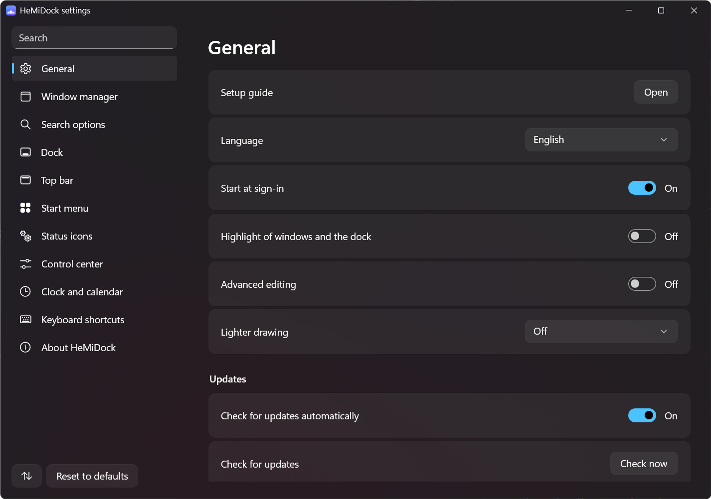

HeMiDockBeta
A replacement of the Windows taskbar: a dock with your apps, the notification area, status icons and the clock – with its own Start menu, control center, calendar and window manager.
Windows 10 2004 or newer / Windows 11, x64. The installer downloads the .NET 10 Runtime and the Windows App Runtime when they are missing; HeMiDock then updates itself. Czech and English.

Settings for everything

What it does
Dock
At any edge of the screen: pinned and running apps with window previews, magnification, the notification area, virtual desktops, Recycle Bin and Downloads.
Start menu
Three looks, pinned apps in groups, all apps, and a search of apps, settings, files and calculations. Quick search with Alt + Space.
Control center
Quick buttons, sound with a mixer of apps, brightness, power mode, media, Wi-Fi, Bluetooth and keep awake.
Status icons
Network, Bluetooth, volume, battery, Windows Security, updates waiting, and signs when an app uses the microphone, camera or location.
Calendar
The notifications of Windows at the clock, a calendar with week numbers and events from Outlook or an internet calendar.
Window manager
Zones to snap windows into, always on top, workspaces that open your apps in their places, rules for apps.
Top bar
Optional, like macOS: the system menu, the active app, now playing, status icons and the clock.
Made your way
Keyboard shortcuts for every action, light and dark, own colours, settings with search and backups.
Downloads
| HeMiDock-Setup.exe | The installer, for most people: installs for your account, gets what is missing, updates come by themselves. |
| HeMiDock-Portable.zip | Runs from any folder without installing anything (bigger, updates by hand). |
| Changes | All releases with their notes |
| Problems, ideas | GitHub Issues |